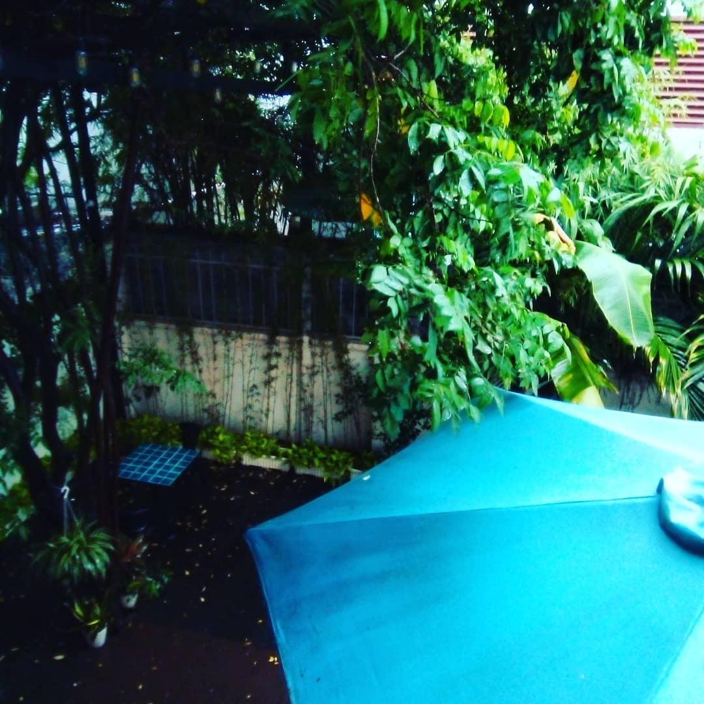

Lòng Trời Trước Cơn Bão
Khi trời mưa bão nổi
Lòng ta sẽ nhớ nhà
Trong những chiều mưa ngập
Một củ sắn đìu hiu
Một đứa bé đang nhìn qua khe cửa
Nhìn ngắm một con thuyền hình chiếc lá
Rớt vào rãnh nước nhỏ
Một phụ nữ bên chiếc nón tả tơi
Chới với bóng hình trong những ngày nổi bão
Vá víu một căn nhà lành lặn
Chất tảng đá lên mái nhà sắp bay mất
Bảo vệ một người chồng không còn nữa
Trước những cơn bão ập ào mồ côi
SG 12/8/20
–
Trước cơn bão, nếu người ta có một mái nhà. Thứ đáng sợ nhất, là gió cuốn mất đi cái mái. Nhà không mái chỉ là cái chái không nhà. Nên trước những cơn bão lớn. Người ta che chắn, gia cố có lẽ cái mái nhà là trọng.
Ở những nơi, những khi mà cái nghèo đáng sợ ngang cơn bão. Người ta gia cố mái nhà trước bão bằng những vật nặng. Khi là bao cát, lúc là cây gỗ lớn… và đôi khi còn là cả một tảng đá.
Người phụ nữ, có chồng nhưng cũng như không có chồng, trong những ngày bão, giữ cái mái nhà ấy, là cả một cuộc chiến đấu. Họ có thể phải mang vác những hòn đá tảng ở trong lòng, và cả một tảng đá hiện thực để chất lên cái mái nhà, nếu không muốn nó bay mất giống như người chồng không còn nữa. Con không cha như nhà không nóc. Nhưng con đã không cha mà còn ở trong căn nhà gió cuốn mất nóc. Ôi nó buồn. Da diết. Dẫu sao, cũng nên giữ lại cho nó cái nóc.
Rồi cơn bão cũng đến. Đối với những đứa trẻ, ngồi trong căn nhà mà ở ngoài là gió giật, đôi khi đối với nó lại là cái thú. Nếu mà còn có cái gì ấm nóng - có thể ăn được, để mà xuýt xoa ‘nóng quá, nóng quá’ xen lẫn với cái xuýt xoa ‘gió to quá, gió to quá’. Thì đó có thể là một niềm hạnh phúc khôn tả đối với một đứa bé. Có lẽ, dù cho người ta, là một đứa bé, hay đứa bé đã lớn, thì cái cảm giác ngồi yên trong căn nhà ấm, nhìn ra trời mưa bão, dẫu gì cũng là một cái cảm giác: Yên lòng. Ít nhất là cho tới khi cái mái nhà vẫn trụ vững.
Mối quan tâm của nó, có thể vượt xa cái mái nhà, vươn đến những cây bưởi, cây ổi ở khắp làng. Nó khoan khoái nghĩ về cái cảnh mà khi bão dứt, nội cái chuyện đi nhặt nhanh trái cây rụng. Nhìn ngắm cái khung cảnh điêu tàn nhưng nhiều thứ để ăn, là một viễn cảnh hấp dẫn.
Đối lập với những người lớn, chốc chốc lại vặn vặn cái nút radio, đập phành phạch, nghe tin ngày bão. Đối với họ, từng con gió giật, là từng đợt lo âu. Chẳng may gió cuốn sạch hoa màu, hư hết lúa, bay mất lớp ngói… hay nặng nhất: gió giật sập căn nhà. Thì bao nhiêu lo âu sẽ thành hiện thực. Nuốt miếng sắn luộc, ấm nóng, mà như cháy ruột cháy gan.
Rồi thì bão cũng qua. Bao gồm cả những đợt bão ở trong lòng.
Nếu mái nhà có bay mất, vẫn có nhiều trái rụng để ăn.
Rồi tầng tầng lớp lớp những viên ngói, lợp lợp lại mái nhà.
Mãi rồi cũng sẽ kín gió. Chẳng sao cả.